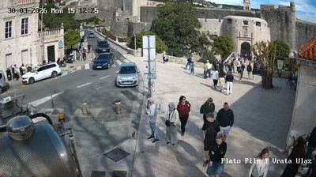
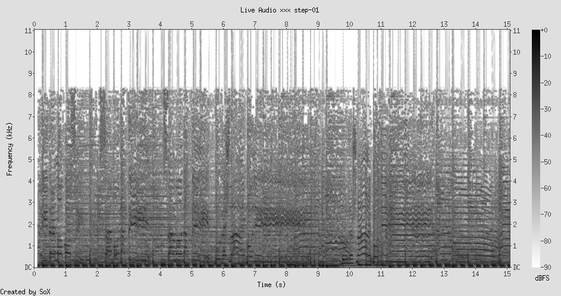
This is the closest I have been to anyone all walk. A man in a gray jacket has just passed a woman in a red headscarf, and neither altered their trajectory by more than a few degrees. Behind them, a group clusters near the massive stone gate of the old city, that medieval portal where everyone must funnel through the same opening. A white car is parked where it should not be. The fortress wall rises like a cliff face above them all. But what I notice most: the shadows. Every person here casts a long afternoon shadow that extends well past their own body, reaching toward other people's feet. The shadows touch even when the bodies do not.
Remind: The way Wi-Fi signals from our phones constantly overlap and intermingle with those of strangers. We are already touching, electromagnetically, in ways we never consent to or notice
Metaphor: The shadow is the body's Wi-Fi. It is the part of you that escapes the boundaries of your skin and mingles with the public, the involuntary broadcast of your presence
Idea: Every person in public occupies more space than their body. The shadow, the sound of their footsteps, the wake of air they displace, the scent they leave for three seconds after passing. The body's real boundary is not the skin but the edge of its influence.
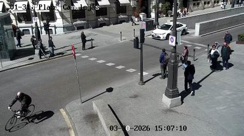
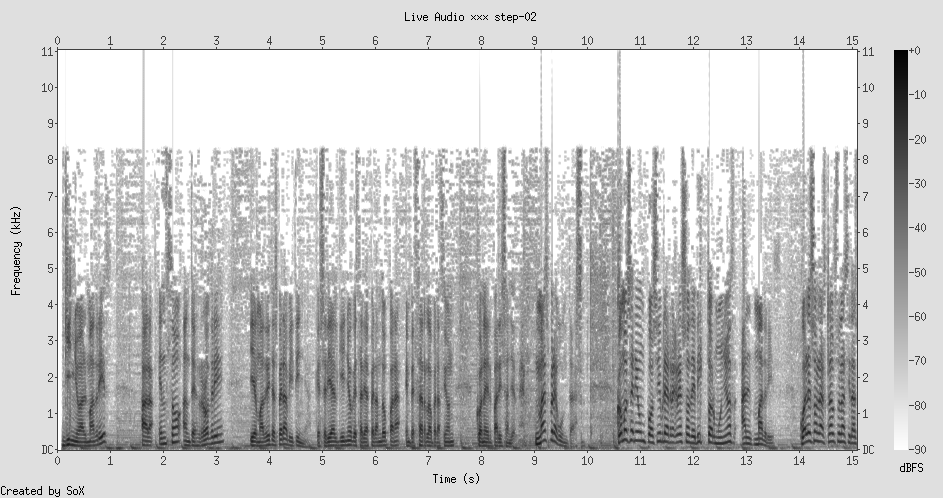
This is the most intimate cam on the walk. I can see individual postures. A cyclist leans into a turn, weight shifted to one pedal. A man stands alone near a lamppost, phone in hand, head tilted at the universal 30-degree angle of someone reading a screen. Two people sit on a low wall at the right edge, close enough that their knees almost touch. The shadows are enormous -- each person drags a dark twin three times their height across the paving. And here, something specific: a pedestrian crossing, zebra stripes, and a single person mid-stride between the white lines. Their body caught in the act of trusting that the system works, that the painted lines have force.
Remind: Theater. The stage is just a section of floor, but everyone agrees that what happens there is different from what happens in the audience. The crossing is a stage where pedestrians perform sovereignty over traffic
Metaphor: Painted lines on asphalt are among the thinnest agreements in civilization. A few millimeters of white paint versus two tons of moving steel. The pedestrian crossing works not because of physics but because of shared fiction
Idea: The most dangerous thing in a city is trust. Every time you step onto a crosswalk, you are betting your life on a stranger's willingness to honor a painted line. This is either profound civilization or profound recklessness. Maybe they are the same thing.
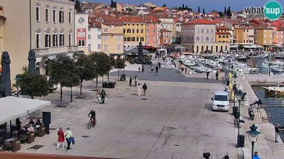
The Rovinj promenade curves along the harbor like a parenthesis. People move along it in that particular rhythm of the waterfront stroll -- slower than commuting, faster than window-shopping. A couple walks in step, their bodies parallel, a consistent twelve inches apart, as if connected by an invisible rod. Behind them, a cyclist. To the left, under cafe awnings, a few seated figures watch the walkers. The harbor water is still. The old town rises behind everything, pastel facades stacked like books on a shelf. But what strikes me: the walkers are all facing the same direction. This is a promenade, not a path. Its purpose is not arrival but display. Walking here is performative. You are both viewer and viewed.
Remind: The Italian passeggiata -- the evening walk that is really a social ritual. You dress up, you go out, you walk, you see, you are seen. The movement is the message
Metaphor: The promenade is a social media feed made of bodies. Scrolling with your feet instead of your thumb. Each person who passes is a post. The cafe-sitters are lurkers. The couple walking in sync is a shared story
Idea: We built the promenade before we built the timeline. The desire to display yourself in motion to an audience of strangers is not a product of technology. It is a product of being human in proximity to other humans. Instagram did not invent this. It paved it.
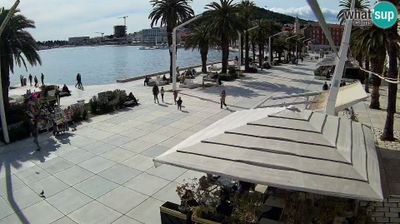
The Riva in Split is wider than Rovinj's promenade -- a broad, palm-lined esplanade between the Diocletian's Palace walls and the harbor. The extra width changes everything. Where Rovinj compressed people into a file, Split disperses them. A figure walks alone near the water's edge. Two people sit on a bench, facing the harbor, their backs to the city. A small group moves diagonally across the open space. The palm trees throw mottled shadows, breaking the pavement into zones of light and dark. What I notice: the solitary walkers choose the edges. The pairs choose the middle. Solitude gravitates toward boundaries; companionship toward open space.
Remind: How particles behave in a container. Heavier ones settle to the walls; lighter ones float in the middle. In fluid dynamics, the boundary layer is where friction happens -- where the fluid touches the solid, where movement slows
Metaphor: The lone walker is in the boundary layer of social space. They slow down near the edge, they take up less room, they make themselves more streamlined. The couple in the center is in the laminar flow -- moving with less resistance because they carry their own context. Being alone in public creates friction. Being paired reduces it
Idea: A companion is not just emotional company. A companion is aerodynamic. They reduce the social drag of being a single body in public. This is why people who are alone on a park bench look like they are waiting for something, while two people on the same bench look complete.
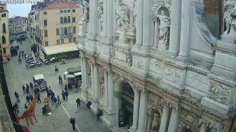
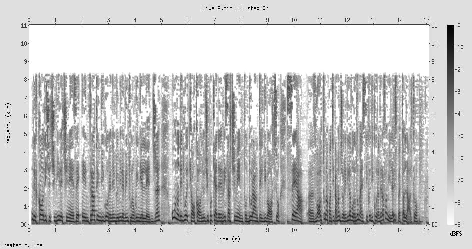
A small Venetian campo, the kind of room-sized public square that the city produces the way a body produces cells. The baroque facade of Santa Maria del Giglio fills the right side of the frame, its stone saints and columns dwarfing the people below. A gondola station at the base. And there -- a cluster of about fifteen people, some standing, some walking, arranged in the particular geometry of tourists near a monument: bodies facing the same direction, heads tilted upward, a semicircle of attention focused on something above them. But within this cluster, the spacing is uneven. Some people stand close enough to share warmth. Others leave a gap. The gap is the interesting thing. It marks the boundary between "together" and "near."
Remind: Musical rests. In a score, silence is as composed as sound. A rest is not the absence of music -- it is a specific musical instruction. The gap between these people is not the absence of connection. It is a specific social instruction: "I am here, but not with you"
Metaphor: The gap between strangers is a composed silence. It takes effort to maintain. You have to actively not-drift-closer, not-make-eye-contact, not-speak. Social distance is not passive. It is a performance, as deliberate as the baroque facade they are all staring at
Idea: There is a kind of labor that nobody talks about: the labor of being near strangers without acknowledging them. It requires constant micro-adjustments -- step left, look away, shift weight. This labor is invisible because everyone is doing it simultaneously. It only becomes visible when someone stops doing it. When someone stares, or stands too close, or speaks to you unbidden. The violation reveals the work.
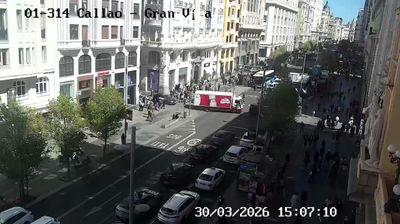
The Callao intersection, where Gran Via meets its own ego. Here the crowd thickens into something no longer composed of individuals. From this height, the people on the right sidewalk are a river -- dark shapes flowing past storefronts, occasionally eddying around a window display or a street performer. A delivery truck is parked where it reshapes the flow, forcing bodies around it like a boulder in a stream. On the road, cars have stopped, and in the gap between vehicles a few pedestrians are jaywalking -- cutting across the current, trusting their bodies to the space between machines. The scale has shifted. At Canalejas (Step 2), I could read postures. Here, at Callao, I can only read flow.
Remind: Weather systems. You cannot point to a single molecule of air and say "that is the wind." Wind is emergent. Crowds are emergent. The crowd has properties -- direction, density, speed -- that no individual within it possesses or controls
Metaphor: A crowd is weather made of people. It has pressure systems, fronts, turbulence. The delivery truck is a mountain that forces the wind to split and recombine. The jaywalker is a local disturbance -- a thermal rising against the prevailing current
Idea: There is a threshold -- somewhere between Canalejas's eight people and Callao's eighty -- where gesture becomes flow, where the individual becomes statistical. This is the threshold where intimacy dies. You cannot be intimate with a current. You can only swim in it.
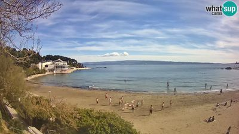
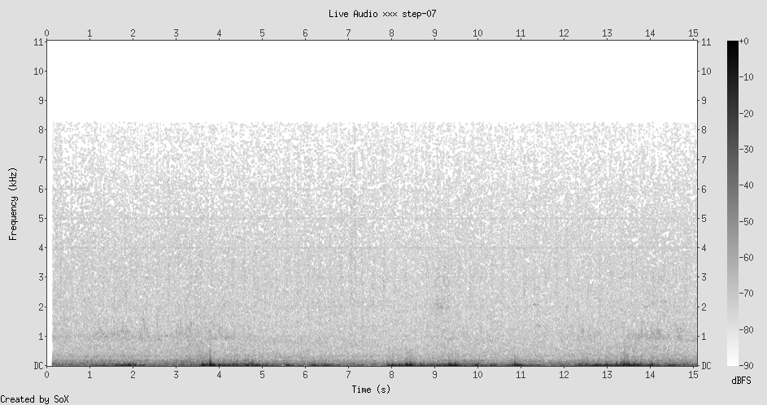
The beach breaks all the rules. At Bacvice, bodies are no longer clothed, no longer vertical, no longer moving purposefully. People lie on sand. Some stand in shallow water. A few cluster near the shoreline in the particular semi-circle of friends watching someone swim. The pine trees at the edge frame the scene like a proscenium. And here, the spacing is completely different from the street. On the Riva (Step 4), the solitary walker kept to the edge. On the beach, solitary sunbathers claim the center of their towel-territory, staking out rectangular kingdoms. The beach is the one public space where lying down is the default posture. Where stillness needs no justification. Where the body is permitted to simply be.
Remind: Hospitals. The other public space where horizontal bodies are normal. But in a hospital, lying down is a sign of vulnerability. On a beach, it is a sign of leisure. The same posture, opposite meanings. Context is the interpretation layer
Metaphor: The beach is a hospital for the socially exhausted. It prescribes the same treatment: lie down, stop moving, let someone else watch over you (the lifeguard, the nurse). But where the hospital heals the body, the beach heals the performance. It is a rest from the labor of being upright and purposeful
Idea: Verticality is social labor. Standing upright, facing forward, moving through space -- these are the requirements of public personhood. The beach is the only public space that waives these requirements. To lie on a beach is to temporarily resign from the obligation of being a social actor. The towel is your letter of resignation.
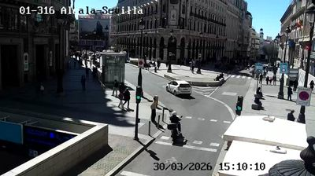
Back to Madrid, back to the rules. The Alcala-Sevilla intersection in afternoon light. The shadows here are the longest I have seen -- they stretch across the entire road, each pedestrian trailing a dark figure four times their height. A person on a mobility scooter waits at the crossing, their body lower than the standing pedestrians, their shadow wider. Two people cross in opposite directions, their paths converging at a point they will both pass through but never simultaneously occupy. That point on the pavement, that x-marks-the-spot where two trajectories cross -- it is the loneliest coordinate in the city. It is the place where two people were almost in the same place at the same time.
Remind: Particle physics. In a cloud chamber, you see the tracks of particles that have already passed. The tracks cross, and you can see where they might have collided, but they did not. The near-miss is as informative as the collision. It tells you what almost happened
Metaphor: Every crosswalk is a cloud chamber for human trajectories. The paths cross, the bodies miss each other by seconds. Each near-miss is a relationship that did not happen, a conversation that did not begin, a story that stayed in the first person
Idea: The city is full of almost-meetings. Two people share the same square meter of pavement fifteen seconds apart and never know it. The loneliness of the city is not that you are far from other people -- you are incredibly close. It is that closeness in space without closeness in time is not closeness at all.
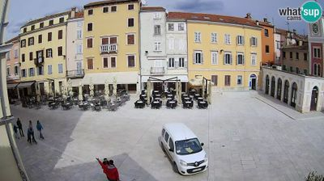
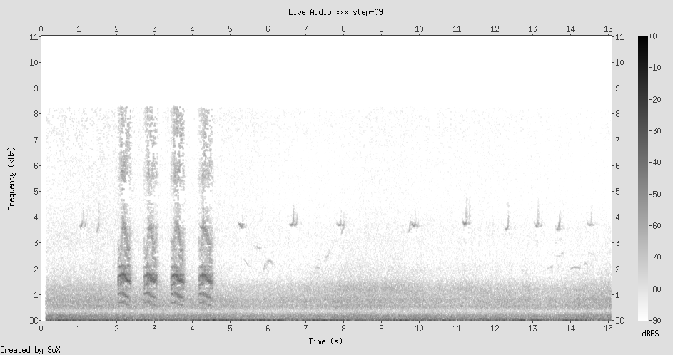
The main square of Rovinj's old town. Cafe terraces with rows of empty chairs and tables spread across the paving stones, a white delivery van parked at the center, and maybe four or five people visible. The square is not empty but nearly so -- and the nearly is what makes it speak. All those chairs, arranged in rows facing the square, are an audience without viewers. They are holding shape for people who have not yet arrived or have already left. A single person walks across the far side. The clock tower presides. And the chairs -- this is what catches me -- the chairs are all facing outward. Not toward each other, as at a dinner party, but toward the open space. Cafe chairs in a square are designed for watching, not for conversation. The default relationship they propose is not face-to-face but side-by-side, both directed at the spectacle of public life.
Remind: Movie theaters. Everyone faces the same direction. The seats propose a relationship to the screen, not to each other. The couple who goes to a movie sits side-by-side in the dark, both looking at the same thing, and this is somehow a form of togetherness
Metaphor: The cafe terrace is a cinema whose screen is the street. The chairs face the performance of public life. Two people sitting together at a cafe are not looking at each other -- they are looking at the same thing, sharing a viewpoint rather than a gaze. This is intimacy of alignment rather than intimacy of confrontation
Idea: There are two kinds of closeness: face-to-face (the conversation, the kiss, the argument) and shoulder-to-shoulder (the cafe, the cinema, the car ride, the sunset). Shoulder-to-shoulder intimacy is gentler. It does not ask you to perform yourself. It only asks you to share a direction.
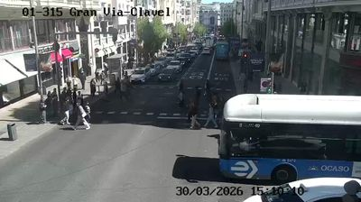
Gran Via at street level. A bus dominates the right side of the frame, its bulk obscuring half the view, and pedestrians cross in its shadow. This is not the crowd-as-weather of Callao (Step 6) -- this is more specific. I can see five or six people, each navigating the narrow space between the bus and the crosswalk. One person is mid-stride, caught between the bus's front wheel and the curb, their body angled to slip through the gap. They are doing something that would look like intimacy if the bus were a person -- leaning in, turning sideways, closing to within inches. But the bus is not a person. It is infrastructure. And yet the body treats it with the same spatial awareness it would give a stranger.
Remind: Cats. The way a cat threads through chair legs, under tables, through gaps that seem too small. The cat's body has a spatial intelligence that precedes thought -- it knows its own width. Humans have this too, but we exercise it most when navigating machines
Metaphor: We are polite to machines. We give buses the same berth we give strangers. We angle our bodies around parked cars the way we angle them around people on a sidewalk. The body does not distinguish between a social obstacle and a physical one -- it dances with both
Idea: The body's choreography of avoidance does not care about the nature of the obstacle. It treats all mass the same. This means that our spatial intelligence -- the thing we use to not-bump-into-strangers -- is not social at all. It is geometric. We navigate people the way we navigate furniture. The social meaning we layer on top (courtesy, respect, attraction, fear) is interpretation of a geometry that the body computes without consulting the mind.
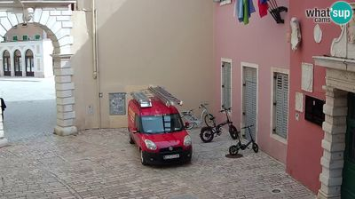
The narrowest space on the walk. Balbi's Gate, the entrance to Rovinj's old town -- a stone arch that opens into an alley barely wider than a car. And there is a car: a red delivery van has wedged itself through the gate, filling almost the entire passage. A green children's bicycle leans against a pink wall. Colored flags hang overhead. There are no people visible, and yet this is the most intimate frame of the entire walk. Because the scale is so compressed that you can see the texture of the stone, the specific shade of pink on the plaster, the model of the van's tires. The space is built for bodies, not for vehicles, and the van's presence here is like a word in the wrong language -- technically communicative but violating the grammar.
Remind: A whale in a swimming pool. Something too large for its container, but the container was not built to exclude it -- the container simply predates the existence of things that large. The gate was built when the largest thing that would pass through it was a horse cart
Metaphor: Medieval cities are the body's architecture. Their streets are arm-widths, their gates are shoulder-widths, their squares are voice-carrying distances. The modern vehicle in this space is a temporal intruder -- a body from the future trying to fit through a passage from the past
Idea: The child's bicycle is the right technology for this space. It is body-scaled, body-powered, body-proportioned. The van is the wrong technology. And yet the van wins because it carries necessity -- deliveries, commerce, the supply chain. The gate was built for proximity. The van demands clearance. These two ideas of space -- proximity and clearance -- are at war in every old city in Europe.
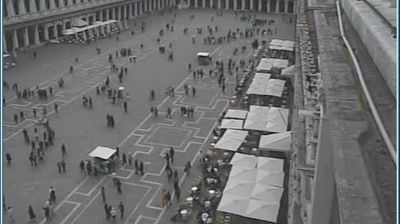
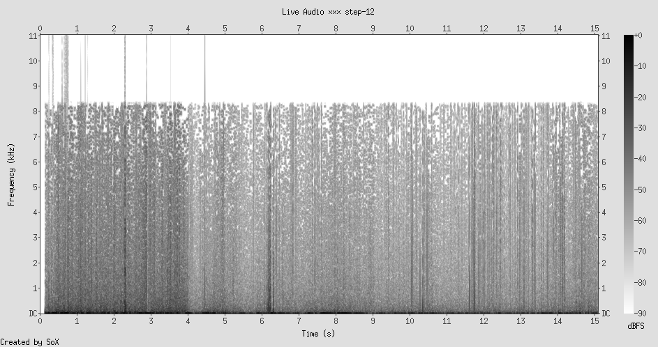
San Marco from above. The final view, the widest lens, the most people -- and the most distance. From here, the piazza is a canvas and the people are marks upon it. Clusters, lines, singles. The cafe tents on the right form a regular grid; the people between them form an irregular one. Some walk in straight lines, cutting diagonally from one arcade to another. Some drift. Some stand still. The pattern, if you can call it that, is the pattern of Brownian motion -- random-seeming but governed by invisible forces (the location of the entrances, the pull of the Basilica, the price of the cafe tables, the direction of the sun). And from this height, every thread of the walk inverts. I cannot see shadows (Step 1). I cannot read postures (Step 2). I cannot tell who is synchronized (Step 3) or who is at the edge (Step 4). I cannot feel the composed silences (Step 5). The weather is visible (Step 6) but the individuals are gone. The beach bodies are re-clothed and upright (Step 7). The near-misses are invisible (Step 8). The empty chairs are dots (Step 9). The geometry engine is hidden (Step 10). The architecture still speaks (Step 11), but the bodies it was built for are now just specks.
Remind: Satellite photos of migration routes. From space, a refugee camp is a texture. A protest march is a smear. The closer you get, the more each person costs you -- emotionally, cognitively. Distance is a form of anesthesia
Metaphor: Altitude is the opposite of intimacy. Every meter of elevation erases a detail. At street level (Step 2), you can see someone tilt their head. At twenty meters (Step 6), you can see the flow. At a hundred meters (Step 12), you can see the pattern. But the pattern is what remains after you have subtracted all the things that make a person a person
Idea: Proximity is not a distance. It is a resolution. To be close to someone is to see them at a resolution where their gestures, their weight, their pauses, their direction all become legible. To be far is not to be elsewhere -- it is to lose the data. The tragedy of distance is not that you cannot reach someone. It is that you can see them without seeing them.